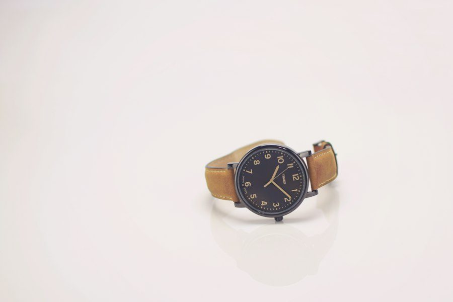

Gravitational Compensation: The Physics and Geometry of Tourbillon Cages
An in-depth horological analysis of Abraham-Louis Breguet's tourbillon invention, carriage rotational inertia, and flying tourbillon kinematics.
 Philippe Mercier
Philippe Mercier